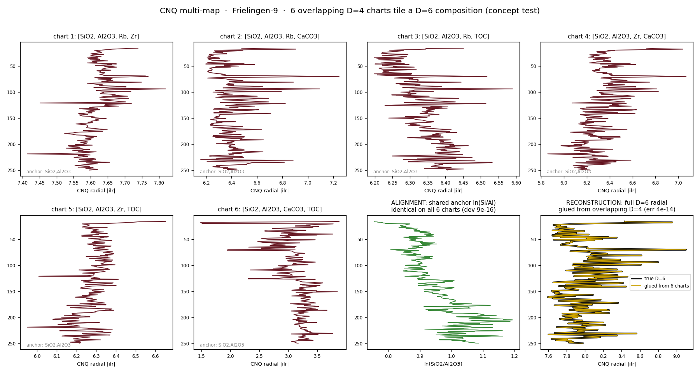

In the Hs engine, the quaternion reading CNQ is native/exact only at D = 4 — four parts give three ILR balances, which map onto a quaternion with no loss confirmed. Above four parts the current options are a declared lossy projection or experimental twins experimental. A real mudstone core-scan has many elements (Si, Al, Ti, K, Ca, Mn, Fe, Rb, Zr, Sr…) — so the question is: how do you get exact rotational structure for a high-dimensional composition without throwing information away?
Instead of one lossy high-D reading, cover the composition with many exact D = 4 charts that overlap on shared parts:
The seed image (Peter's): you cannot capture a sphere with one flat projection; you need several, and they must overlap so that, mapped back, the duplicated boundary points coincide and collapse the flat pieces into the single round object. That instinct is right — with two precise corrections worth stating for the record:
| Claim | Status |
|---|---|
| Overlap/duplication is mandatory to glue lower-D pieces into a higher-D whole. | Correct. It is the heart of the atlas / sheaf picture. |
| Three mutually orthogonal projections are maximally independent → no shared region to align by. | Correct, and key. Independence and alignment trade off: to register, you must give up some independence and reintroduce shared data. |
| Two projections leave the sphere "assumed, not proven." | Half. For topological reconstruction, two stereographic charts already glue into a sphere (they overlap on a ring). For proving sphericity from shadows, two is indeed not enough. |
| Three orthogonal silhouettes don't prove a sphere; you need a fourth. | Right that 3 fail — the Steinmetz tricylinder (three perpendicular cylinders intersected) casts a perfect circle on all three axes and is not a sphere. But the deeper truth: no finite number of silhouettes proves an exact sphere — you can always hide a bump between sampled directions. Finiteness bounds the deviation; density proves it. |
So "four" is best read not as a completeness proof but as the practical floor: three to span/constrain independently, plus at least one more — deliberately non-orthogonal — to supply the overlap that ties the independent three together. That extra chart is the registration chart.
The working Frielingen-9 example extended to a D = 6 bulk subcomposition [SiO2, Al2O3, Rb, Zr, CaCO3, TOC], tiled into six overlapping D = 4 charts, all sharing the anchor pair {SiO2, Al2O3} and each adding one pair from {Rb, Zr, CaCO3, TOC}:
Note: with six parts you cannot tile into 4-charts without duplication — overlap is forced by the geometry, which is the thesis in miniature. For this concept test CaCO3 and TOC are folded into the composition (so there is no held-out calibration target here); the proper test uses the high-resolution multi-element core-scan.

| Element | Tier | Note |
|---|---|---|
| Each 4-part chart's CNQ is exact | confirmed | D = 4 is native quaternion. |
| Shared parts align charts (subcompositional coherence) | confirmed | Identity to machine precision. |
| Overlapping charts reconstruct the full-D log-ratio move losslessly | confirmed | Linear, exact; demonstrated here on real data. |
| Overlap is required for reconstruction | confirmed | Disjoint atlas is singular. |
| The per-chart CNQ ensemble (rotation, helmsman, regime) carries interpretive value | to test | The open scientific question — does the atlas tell a geologist something a single high-D projection wouldn't? |
| Behaviour on genuine high-D multi-element core-scan data | to test | Needs the 1 cm Ca/Ti/K/Mn/Fe/Sr… datasets. |
| Optimal atlas design (which parts to anchor, how much overlap) | to test | Diversity-vs-overlap trade-off; an over-complete-frame optimisation. |
| Recovering higher-order coupling (not just the linear move) | open limit | The marginal problem: some joint structure is invisible to any set of low-D charts unless the overlaps are placed where that coupling lives. |
A mudstone core-scan is naturally high-dimensional (many elements) yet comes with independent ground truth — carbonate, TOC, δ¹³C excursions, biostratigraphy, picked surfaces — so the atlas's reconstructions and the per-chart dynamics can be checked against answers that are known by other means. That combination (genuine high D + outside calibration) is exactly what a method like this needs to be tested honestly. The instrument reports; you judge whether the multi-map tells you anything geological.
python cnq_multimap.py → cnq_multimap.png + cnq_multimap_data.json.
Method primer: ../HS_PRIMER.md. Dashboard guide: frielingen9_dashboard_guide.html.